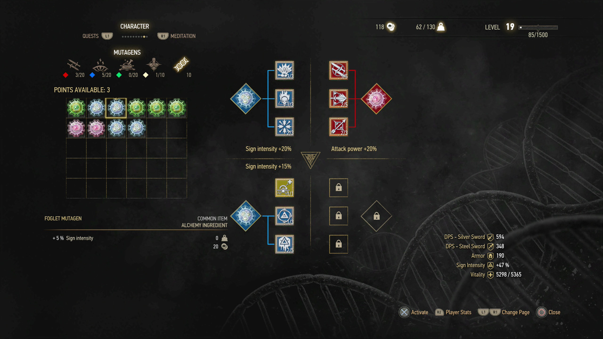

Geralt has many signs and abilities that can be changed in the Character section in the game menu. Add various effects to signs and abilities to suit your play-style.
To view and change Geralt's abilities, open the game menu, then select Character.